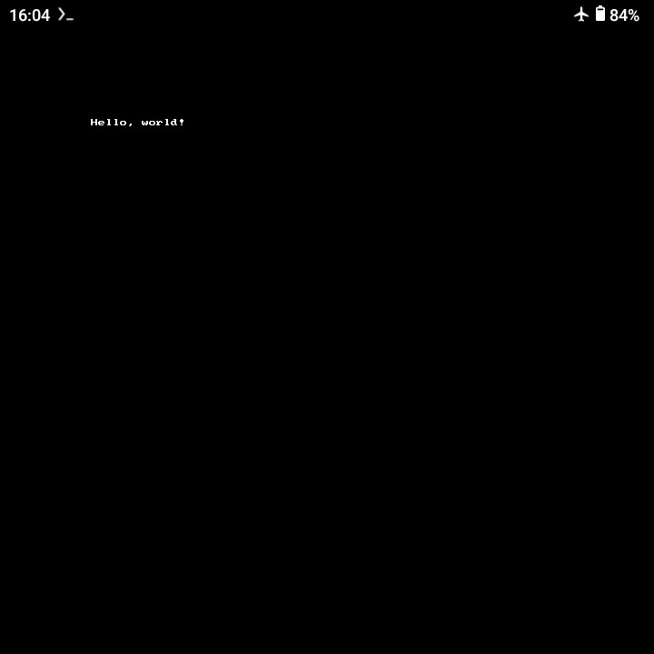

參考資訊：
https://github.com/steward-fu/sdl2
app/jni/src/main.c
#include <stdio.h>
#include <stdlib.h>
#include <SDL.h>
#include <SDL2_gfxPrimitives.h>
int main(int argc, char **argv)
{
const int w = 320;
const int h = 240;
const int bpp = 16;
SDL_Window *window = NULL;
SDL_Renderer *renderer = NULL;
SDL_Init(SDL_INIT_VIDEO);
window = SDL_CreateWindow("main", SDL_WINDOWPOS_UNDEFINED, SDL_WINDOWPOS_UNDEFINED, w, h, SDL_WINDOW_SHOWN);
renderer = SDL_CreateRenderer(window, -1, SDL_RENDERER_ACCELERATED | SDL_RENDERER_PRESENTVSYNC);
SDL_RenderClear(renderer);
stringRGBA(renderer, 100, 100, "Hello, world!", 0xff, 0xff, 0xff, 0xff);
SDL_RenderPresent(renderer);
SDL_Delay(3000);
SDL_DestroyRenderer(renderer);
SDL_DestroyWindow(window);
SDL_Quit();
return 0;
}
編譯
$ ./gradlew assembleDebug -PBUILD_AS_LIBRARY=true
$ ./gradlew assembleDebug -PBUILD_AS_APPLICATION=true
$ file app/build/outputs/apk/debug/app-debug.apk
app/build/outputs/apk/debug/app-debug.apk: Android package (APK), with gradle app-metadata.properties, with APK Signing Block
完成
